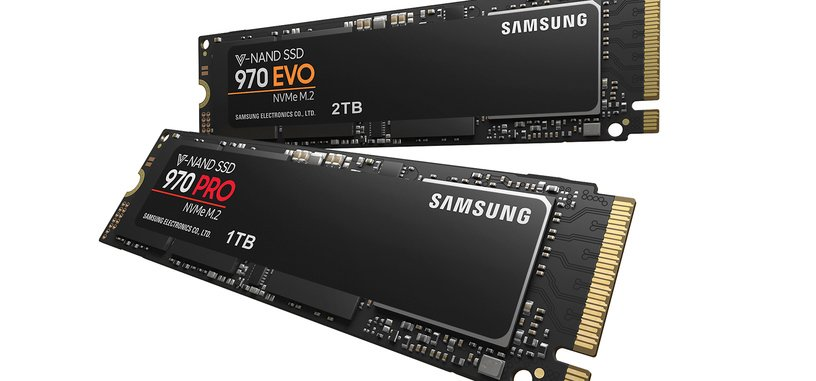

Las unidades de estado sólido o SSD (Solid State Drive) son una alternativa a los discos duros. La gran diferencia es que mientras los discos duros utilizan componentes mecánicos que se mueven, las SSD almacenan los archivos en microchips con memorias flash interconectadas entre sí.